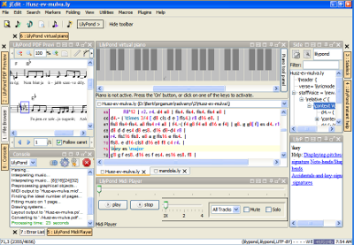

编辑更简单
LilyPondTool


(click to enlarge)
https://lilypondtool.organum.hu
Created as a plugin for the jEdit text editor, LilyPondTool is one of the most feature-rich text-based tools for editing LilyPond scores. Its features include a Document Wizard with lyrics support to set up documents easier, and embedded PDF viewer with advanced point-and-click support.
Frescobaldi

(click to enlarge)
Frescobaldi is lightweight, yet powerful LilyPond music and text editor with a built-in PDF viewer. It is easy to use and will run on all major operating systems (Linux, Mac OS X and Windows).
Denemo

(click to enlarge)
Denemo is a graphical editor which generates LilyPond source code, and also allows audio playback. It allows users to view the LilyPond source code in parallel to the graphical view. Extra LilyPond tweaks can be attached to notes, chords etc. and are stored with the Denemo file, so that users can continue to edit graphically.
Moving the cursor in the LilyPond text moves the cursor in the graphical view, and any syntax errors in your LilyPond tweaks are highlighted in the text view when printed from there.
文本编辑器
https://www.gnu.org/software/emacs/
Emacs is a text editor with language-sensitive capabilities for many different computer languages. Emacs is a highly extensible editor and can be used as an Integrated Development Environment. There is a ‘lilypond mode’ which supplies the language definitions for working with LilyPond source files. As well, one of our developers has written lyqi, an Emacs major mode.
Vim is a minimal text editor and is an extension of the older Unix
vi editor. It is also extensible and configurable.
As a general rule, if you are not already familiar with Emacs or Vim, then you would probably prefer to use a different editor for writing LilyPond input files.
More information on setting up Emacs and Vim can be found in Text editor support.
http://www.uoregon.edu/~koch/texshop
The TeXShop editor for Mac OS X can be extended to run LilyPond,
lilypond-book and convert-ly from within the editor,
using the extensions available at:
There is a LilyPond bundle for TextMate, a commercial editor for MacOS. It may be installed by running:
mkdir -p /Library/Application\ Support/TextMate/Bundles cd /Library/Application\ Support/TextMate/Bundles git clone http://github.com/textmate/lilypond.tmbundle.git
可以导出 LilyPond 代码的程序
Score, tab and MIDI editors (音符，谱号和 MIDI 编辑器：
- Canorus, a score editor, can also export to LilyPond, but is still beta-software. Testers are welcome, though.
- NtEd, a score editor based on the Cairo library, has experimental support for exporting to LilyPond.
- MuseScore, a score editor, has incomplete LilyPond export but is being actively developed.
- NW2LY is a C# program which converts a NoteWorthy song into LilyPond.
- Ripple is a program that helps create scores and parts, including a mode for mixing different musical works together in a single score or part.
- Rosegarden, an audio and MIDI sequencer, which also has a score editor for single-staff editing.
- Rumor, a realtime monophonic MIDI to LilyPond converter.
- TuxGuitar, a multitrack tablature editor and player, includes a score viewer and can export to LilyPond.
算法代码生成器
- Abjad, a Python API for Formalized Score Control designed to help composers build up complex pieces of LilyPond notation in an iterative and incremental way.
- FOMUS, a LISP library to generate music notation from computer music software environments.
- Strasheela, an environment built on top of the Mozart/Oz constraint programming language.
其他开发不活跃的程序
然后呢？
You are now ready to Download LilyPond.
Still not convinced? Many composers, musicians, and conductors have learned how to write music in our input format. Experienced users even report that they can enter a full score in LilyPond faster than with a piano keyboard or mouse+GUI! Perhaps you would like to review the 特色, 例子, or the 自由 that LilyPond provides, or read about users’ 制作 and 评价. In addition, our approach to the computational aesthetics of classical engraving is explained in our 背景.
法律条文
All logos and product images are copyright and trademark acknowledged.
Tux the Linux Penguin was created by lewing@isc.tamu.edu with the Gnu Image Manipulation Program.
The FreeBSD logo is a registered trademark of The FreeBSD Foundation.
The “X image” is not a registered trademark. It was created by Nihonjoe and CyberSkull, and placed under the GNU Free Documentation License version 1.2 or later. We found the image on this Wikimedia Commons page.

The “four colored rectangles image” is not a registered trademark. It was created by Rohitbd and placed under the GNU Free Documentation License version 1.2. We found the image on this Wikimedia Commons page.